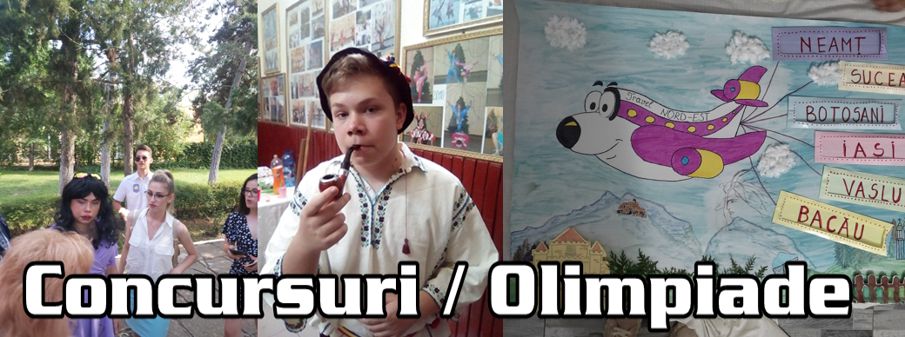

Concursuri și olimpiade
Pe parcursul anilor am participat la diverse concursuri și olimpiade, atât școlare cât și extrașcolare, fiecare având câte un avantaj; am câștigat experiențe unice, am avut posibilitatea de a reprezenta școala, județul, am putut interacționa cu oameni minunați care mi-au oferit mereu câte ceva de învățat.
În timpul învățământului primar am avut oportunitatea de a reprezenta școala și orașul în cadrul unui concurs Erasmus, unde am reușit să câștig locul III național, lucru de care sunt mândru și acum. Din păcate, din cauza fondurilor alocate în perioada respectivă, nu am putut beneficia și de premiul de la acel concurs, deci în loc să merg în Bruxelles am rămas în oraș. În aceeași perioadă am participat și la concursuri locale, precum "Gala Copilului Actor" unde am reușit performanța de a câștiga locul I în două ediții, ulterior prezentând o dată spectacolul. Pe lângă aceste concursuri am participat și la emisiunea "Next Star", experiență prezentată în prima pagină a site-ului.
În gimnaziu trebuie să recunosc că am rărit participarea la concursuri pentru a lăsa loc de învățat pentru examenul național. Însă asta nu înseamnă că am renunțat complet, participând la diverse concursrui de recitare, reușind din nou să reprezint școala și la olimpiada de limba și literatură română.
O dată cu începerea liceului, mi-am dorit să particip și să mă implic în cât mai multe concursuri, proiecte și olimpiade, așa am început încă din clasa a IX-a să fiu o parte din echipa care lucrează la revista "Sport ATLas", realizând design-ul grafic. În același an a apărut și pandemia care mi-a oprit studiile pentru o perioadă de timp, însă începând cu clasa a X-a online, am continuat revista și am reușit să particip și la olimpiada de informatică unde am avut performanța de a lua locul 3 județean.
Clasa a XI-a a contribuit cel mai mult în această categorie, deoarece sub îndrumarea doamnei profesoare Rîznic Cristina am participat la concursul "Alege! Este dreptul tău!" organizat de Autoritatea Națională pentru Protecția Consumatorului (ANPC) unde am reușit să ajung nu doar la etapa județeană, ci chiar la națională unde am reprezentat județul și liceul. Mă simt nevoit să dezvolt întâmplările din acest concurs deoarece săptămâna petrecută pentru pregătirea etapei naționale a fost plină de peripeții și mi-a schimbat viața într-un mod radical, însă până la această schimbare, trebuie să înțelegem ce am făcut și în ce au constat probele:
Din fericire, tot efortul depus a dat roade și am reușit să trec peste ambele probe, fiind anunțat al doilea participant la etapa națională. Am fost uimit și foarte bucuros de momentul în care mi-a fost anunțat numele, pentru că asta însemna că voi merge la mare timp de o săptămână unde urma să pregătim o serie de probe, atât de echipa cât și individuale.
În poza alăturată vedem persoanele cu care am plecat, fiind repartizați doi elevi din Botoșani și doi din Suceava, iar profesoara coordonatoare cu care am participat fiind tot din Suceava. Mare mi-a fost mirarea în momentul în care am alfat că am fost printre singurii elevi care nu făceau parte dintr-un liceu de economie sau contabilitate. Drumul a fost destul de lung, fiind nevoit să plec din oraș la ora 3 dimineața pentru a ajunge tocmai la amiază în Eforie Nord, stațiunea unde se ținea concursul. Odată ajunși acolo, ne-am cunoscut coechipierii, cu care urma să lucrăm timp de o săptămână. Trebuie să recunosc că a fost cea mai bună echipă pe care mi-o puteam dori. Alături de ei am avut parte de distracție, momente amuzante, serioase, tensionate care ne-au unit mai mult ca și prieteni decât orice altceva.
Etapa națională consta în:
Testul individual nu a fost foarte diferit de cel dat la etapa județeană, însă întrebările din componența sa făceau diferența dintre participanții care au învățat cu adevărat legea, și cei care nu au fost la fel de atenți. Partea cu adevărat distractivă a fost la scenetă, când am fost nevoit să joc un rol travestit de femeie. Sceneta a fost un pamflet a incidentului cu soții Pastramă, eu jucând rolul Brigittei Pastramă. Jucarea acestui rol a fost una dintre cele mai distractive activități făcute în cadrul concursului, deoarece mi-a oferit libertatea de a exagera personajul așa cum mi-am dorit, fiind un scenariu gândit de noi la ora 2 dimineața. Da, așa a decurs toată săptămâna: ne trezeam la ora 6 și adormeam în jurul orei 2, iar toată ziua pregăteam probele la care urma să participăm.
Fetele au făcut o treabă minunată cu machiajul meu, și chiar au reușit să mă transforme într-o adevărată figură, iar eu mi-am intrat în rol, devenind cea mai autentică pițipoancă. De la mers, la gesturi, priviri, vorbe, etc. am reușit să fiu cea mai veritabilă "femeie". Nu a fost ușor, am fost nevoit să port o rochie, ciorapi lungi, sutien umplut cu ciorapi, o perucă și o pereche de sandale cu 3 mărimi mai mici, însă s-a meritat. Privirile juriului în momentul în care ne-au văzut prezentând au fost minunate; am reușit să le captăm atenția fără ca măcar să încercăm, am realizat în câteva ore o scenetă de care putem fi mândri și acuma. Ne-am bătut capul, am făcut compromisurile necesare, dar am reușit. Așa am învățat că dacă vrei să fii cel mai bun, trebuie să tragi tare, iar noi asta am și făcut.
După scenetă, am pregătit un desen în care ne prezentam regiunile, sub forma unui anunț al unei însoțitoare de zbor, care menționa zonele peste care "zburam". Spre final, după toate probele date, fiecare noapte în care am adormit târziu, fiecare replică învățată, idee spusă, moment în care nu mai știam ce să facem, am reușit să fim mândri de munca noastră, iar la premiere am fost plăcut surprinși când am aflat că am câștigat premiul III.
Cu toate acestea, premiul adevărat a fost experiența concursului, prieteniile legate, momentele în care ne-am apropiat ca și oameni, însă mai presus de toate, sunt fericit de faptul că după acest concurs nu m-am întors singur, ci am găsit o fată minunată, care mi-a oferit o perspectivă nouă și frumoasă asupra vieții. Așa că pot spune că participarea la acest concurs m-a schimbat ca și persoană, deoarece după toate peripețiile noastre ca și echipă, am câștigat și din punct de vedere moral, iar asta este mai mult decât îmi puteam imagina în momentul în care m-am înscris.